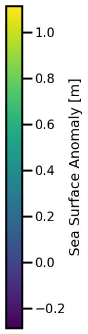
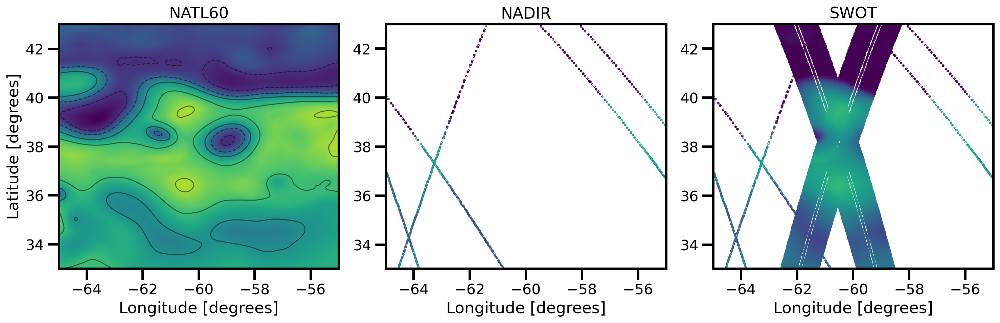
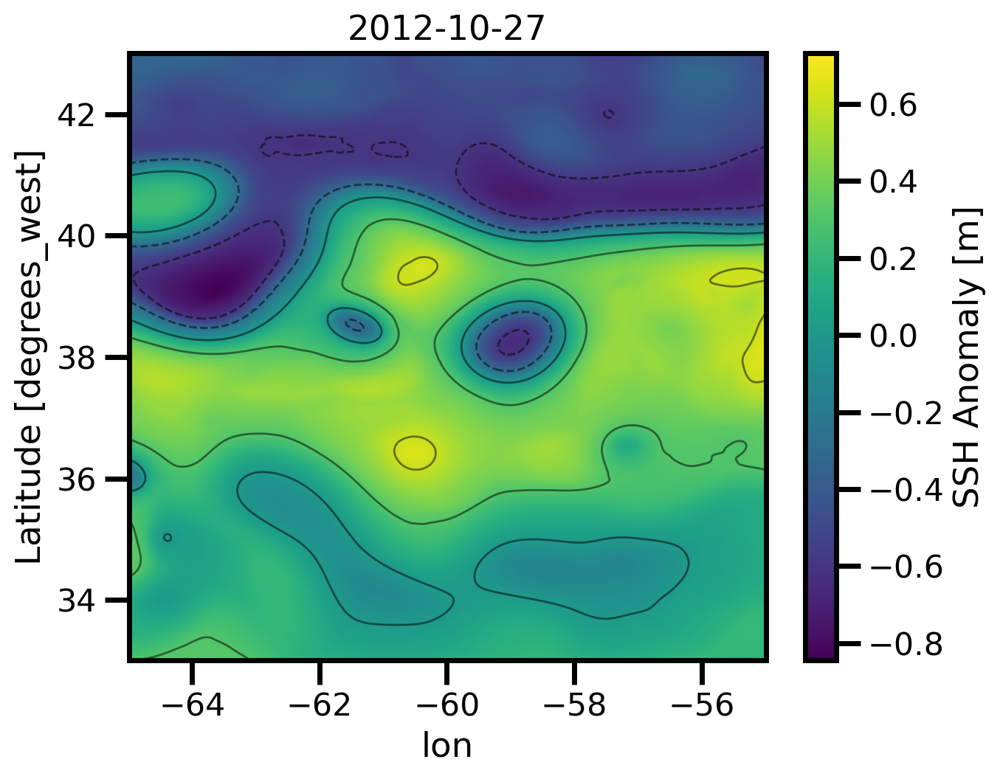

Movies#
import sys, os
# spyder up to find the root
oceanbench_root = "/gpfswork/rech/cli/uvo53rl/projects/oceanbench"
# append to path
sys.path.append(str(oceanbench_root))
import autoroot
import typing as tp
import jax
import jax.numpy as jnp
import jax.scipy as jsp
import jax.random as jrandom
import numpy as np
import numba as nb
import pandas as pd
import equinox as eqx
import kernex as kex
import diffrax as dfx
import xarray as xr
import matplotlib.pyplot as plt
import seaborn as sns
from tqdm.notebook import tqdm, trange
from jaxtyping import Float, Array, PyTree, ArrayLike
import wandb
from omegaconf import OmegaConf
import hydra
import metpy
from sklearn.pipeline import Pipeline
from jejeqx._src.transforms.dataframe.spatial import Spherical2Cartesian
from jejeqx._src.transforms.dataframe.temporal import TimeDelta
from jejeqx._src.transforms.dataframe.scaling import MinMaxDF
sns.reset_defaults()
sns.set_context(context="poster", font_scale=0.7)
jax.config.update("jax_enable_x64", False)
%matplotlib inline
%load_ext autoreload
%autoreload 2
Processing Chain#
Part I:
Open Dataset
Validate Coordinates + Variables
Decode Time
Select Region
Sortby Time
Part II: Regrid
Part III:
Interpolate Nans
Add Units
Spatial Rescale
Time Rescale
Part IV: Metrics
Data#
# !wget wget -nc https://s3.us-east-1.wasabisys.com/melody/osse_data/ref/NATL60-CJM165_GULFSTREAM_ssh_y2013.1y.nc
# !cat configs/postprocess.yaml
# # load config
# config_dm = OmegaConf.load('./configs/postprocess.yaml')
# # instantiate
# ds = hydra.utils.instantiate(config_dm.NATL60_GF_1Y1D)
# ds
Reference Dataset#
For the reference dataset, we will look at the NEMO simulation of the Gulfstream.
%%time
# load config
config_dm = OmegaConf.load("./configs/postprocess.yaml")
# instantiate
ds_natl60 = hydra.utils.instantiate(config_dm.NATL60_GF_FULL).compute()
ds_natl60
CPU times: user 12.3 s, sys: 2.78 s, total: 15.1 s
Wall time: 46.7 s
<xarray.Dataset>
Dimensions: (time: 42, lat: 600, lon: 600)
Coordinates:
* lon (lon) float64 -64.98 -64.97 -64.95 -64.93 ... -55.03 -55.02 -55.0
* lat (lat) float64 33.02 33.03 33.05 33.07 ... 42.95 42.97 42.98 43.0
* time (time) datetime64[ns] 2012-10-22 2012-10-23 ... 2012-12-02
Data variables:
ssh (time, lat, lon) float32 0.6549 0.6571 0.6593 ... -0.2152 -0.2174
Attributes:
Info: Horizontal grid read in regulargrid_NATL60.nc / Source field re...
About: Created by SOSIE interpolation environement => https://github.c...nadir4_config = OmegaConf.load(f"./configs/natl60_obs.yaml")
ds_nadir4 = hydra.utils.instantiate(nadir4_config.ALONGTRACK_NADIR4.data).compute()
ds_swot1nadir5 = hydra.utils.instantiate(
nadir4_config.ALONGTRACK_SWOT1NADIR5.data
).compute()
ds_swot1nadir5
<xarray.Dataset>
Dimensions: (time: 1003548)
Coordinates:
lon (time) float64 -55.03 -55.06 -55.1 -55.13 ... -59.01 -59.03 -59.05
lat (time) float64 39.58 39.53 39.47 39.42 ... 42.81 42.87 42.93 42.98
* time (time) datetime64[ns] 2012-10-22T11:16:43.687588 ... 2012-12-02T...
Data variables:
ssh (time) float64 0.9958 1.014 1.027 1.032 ... -0.112 -0.1122 -0.1118
Attributes: (12/26)
description: SWOT fixed grid
corresponding_grid:
title: Altimeter like data simulated by SWOT simulator
keywords: check keywords
Conventions: CF-1.6
summary: SWOT grid data produced
... ...
geospatial_lon_units: degrees_east
project: SWOT
date_created: 2018-10-12T12:39:50Z
date_modified: 2018-10-12T12:39:50Z
keywords_vocabulary: NASA
references: Gaultier, L., C. Ubelmann, and L.-L. Fu, 2016:...def custom_plot_ssh_together(ds, fig, tt, *args, **kwargs):
sub = ds.isel(time=tt)
xlim = kwargs.pop("xlim", None)
ylim = kwargs.pop("ylim", None)
vmin = kwargs.pop("vmin", sub.natl60.min())
vmax = kwargs.pop("vmax", sub.natl60.max())
cmap = kwargs.pop("cmap", "viridis")
X, Y = np.meshgrid(ds.lon, ds.lat, indexing="ij")
fig.set_size_inches(15, 5)
ax = fig.subplots(ncols=3)
# NATL60
sub.natl60.plot.pcolormesh(
ax=ax[0],
cmap=cmap,
add_colorbar=False
# vmin=vmin, vmax=vmax,
# **kwargs
)
loc = ticker.MaxNLocator(6)
levels = loc.tick_values(vmin,vmax)
sub.natl60.plot.contour(
ax=ax[0],
levels=levels,
# vmin=vmin, vmax=vmax,
alpha=0.5, linewidths=1, cmap="black",
linestyles=np.where(levels >= 0, "-", "--")
)
# ax.set_aspect('equal')
ax[0].set(
xlabel="Longitude [degrees]",
ylabel="Latitude [degrees]",
title="NATL60"
)
# NADIR4
pts = ax[1].scatter(
X, Y, c=np.ma.masked_invalid(sub.nadir).T,
marker="s",
s=0.25,
vmin=vmin, vmax=vmax
)
ax[1].set(
xlim=xlim, ylim=ylim,
)
# plt.colorbar(None, cmap="viridis", label="")
ax[1].set(
xlabel="Longitude [degrees]",
ylabel="",
)
ax[1].set_title("NADIR")
fig.tight_layout()
# SWOT1NADIR5
pts = ax[2].scatter(
X, Y, c=np.ma.masked_invalid(sub.swot).T,
marker="s",
s=0.25,
vmin=vmin, vmax=vmax)
ax[2].set(
xlim=xlim, ylim=ylim,
)
# fig.colorbar(pts, ax=ax, location='bottom', label="SSH Anomaly [m]", )
# plt.colorbar(pts, cmap="viridis", , pad=0.1)
ax[2].set(
xlabel="Longitude [degrees]",
ylabel="",
)
ax[2].set_title("SWOT")
fig.tight_layout()
return None, None
# ds_natl60 = ds_natl60.coarsen({"lon": 2, "lat": 2}).mean()
# ds_natl60
Prediction Datasets#
%%time
experiment = "nadir" # "swot" #
if experiment == "nadir":
# load config
results_config = OmegaConf.load(f'./configs/results_dc20a_nadir.yaml')
# instantiate
ds_duacs = hydra.utils.instantiate(results_config.DUACS_NADIR.data).compute()
ds_miost = hydra.utils.instantiate(results_config.MIOST_NADIR.data).compute()
ds_nerf_siren = hydra.utils.instantiate(results_config.NERF_SIREN_NADIR.data).compute()
ds_nerf_ffn = hydra.utils.instantiate(results_config.NERF_FFN_NADIR.data).compute()
ds_nerf_mlp = hydra.utils.instantiate(results_config.NERF_MLP_NADIR.data).compute()
elif experiment == "swot":
# load config
results_config = OmegaConf.load(f'./configs/results_dc20a_swot.yaml')
# instantiate
ds_duacs = hydra.utils.instantiate(results_config.DUACS_SWOT.data).compute()
ds_miost = hydra.utils.instantiate(results_config.MIOST_SWOT.data).compute()
ds_nerf_siren = hydra.utils.instantiate(results_config.NERF_SIREN_SWOT.data).compute()
ds_nerf_ffn = hydra.utils.instantiate(results_config.NERF_FFN_SWOT.data).compute()
ds_nerf_mlp = hydra.utils.instantiate(results_config.NERF_MLP_SWOT.data).compute()
CPU times: user 178 ms, sys: 61.7 ms, total: 240 ms
Wall time: 537 ms
!ls /gpfswork/rech/yrf/commun/data_challenges/dc20a_osse/staging/ml_ready/
nadir1.nc nadir4.nc nadir5.nc swot1nadir5.nc swot1.nc swot.nc
Regrdding#
from oceanbench._src.geoprocessing.gridding import (
grid_to_regular_grid,
coord_based_to_grid,
)
ds_nadir4 = coord_based_to_grid(
coord_based_ds=ds_nadir4.pint.dequantify(),
target_grid_ds=ds_natl60.pint.dequantify(),
)
ds_swot1nadir5 = coord_based_to_grid(
coord_based_ds=ds_swot1nadir5.pint.dequantify(),
target_grid_ds=ds_natl60.pint.dequantify(),
)
ds_nadir4
<xarray.Dataset>
Dimensions: (time: 42, lat: 600, lon: 600)
Coordinates:
* time (time) datetime64[ns] 2012-10-22 2012-10-23 ... 2012-12-02
* lat (lat) float64 33.02 33.03 33.05 33.07 ... 42.97 42.98 43.0
* lon (lon) float64 -64.98 -64.97 -64.95 ... -55.03 -55.02 -55.0
Data variables:
model_index (time, lat, lon) float32 nan nan nan nan ... nan nan nan nan
ssh (time, lat, lon) float32 nan nan nan nan ... nan nan nan nan
x_al (time, lat, lon) float32 nan nan nan nan ... nan nan nan nan
ssh_obs (time, lat, lon) float32 nan nan nan nan ... nan nan nan nan
ncycle (time, lat, lon) float32 nan nan nan nan ... nan nan nan nan
nadir_err (time, lat, lon) float32 nan nan nan nan ... nan nan nan nan%%time
ds_duacs = grid_to_regular_grid(
src_grid_ds=ds_duacs.pint.dequantify(),
tgt_grid_ds=ds_natl60.pint.dequantify(), keep_attrs=False
)
ds_miost = grid_to_regular_grid(
src_grid_ds=ds_miost.pint.dequantify(),
tgt_grid_ds=ds_natl60.pint.dequantify(), keep_attrs=False
)
ds_nerf_siren = grid_to_regular_grid(
src_grid_ds=ds_nerf_siren.pint.dequantify(),
tgt_grid_ds=ds_natl60.pint.dequantify(), keep_attrs=False
)
ds_nerf_ffn = grid_to_regular_grid(
src_grid_ds=ds_nerf_ffn.pint.dequantify(),
tgt_grid_ds=ds_natl60.pint.dequantify(), keep_attrs=False
)
ds_nerf_mlp = grid_to_regular_grid(
src_grid_ds=ds_nerf_mlp.pint.dequantify(),
tgt_grid_ds=ds_natl60.pint.dequantify(), keep_attrs=False
)
CPU times: user 51.7 s, sys: 1.33 s, total: 53.1 s
Wall time: 53.2 s
Preprocess Chain#
%%time
# load config
psd_config = OmegaConf.load('./configs/metrics.yaml')
ds_natl60 = hydra.utils.instantiate(psd_config.fill_nans)(ds_natl60.pint.dequantify())
ds_duacs = hydra.utils.instantiate(psd_config.fill_nans)(ds_duacs.pint.dequantify())
ds_miost = hydra.utils.instantiate(psd_config.fill_nans)(ds_miost.pint.dequantify())
ds_nerf_siren = hydra.utils.instantiate(psd_config.fill_nans)(ds_nerf_siren.pint.dequantify())
ds_nerf_ffn = hydra.utils.instantiate(psd_config.fill_nans)(ds_nerf_ffn.pint.dequantify())
ds_nerf_mlp = hydra.utils.instantiate(psd_config.fill_nans)(ds_nerf_mlp.pint.dequantify())
CPU times: user 17.2 s, sys: 33.8 ms, total: 17.2 s
Wall time: 17.3 s
def correct_labels(ds):
ds["lon"].attrs["units"] = "degrees"
ds["lat"].attrs["units"] = "degrees"
ds["ssh"].attrs["units"] = "m"
ds["ssh"].attrs["standard_name"] = "sea_surface_height"
ds["ssh"].attrs["long_name"] = "Sea Surface Height"
ds["lon"].attrs["standard_name"] = "longitude"
ds["lat"].attrs["standard_name"] = "latitude"
ds["lat"].attrs["long_name"] = "Latitude"
ds["lon"].attrs["long_name"] = "Longitude"
return ds
SSH#
from xmovie import Movie
from pathlib import Path
from matplotlib import ticker
def custom_plot_ssh_obs(ds, fig, tt, *args, **kwargs):
fig.set_size_inches(7, 5.5)
# NATL60
ax = fig.add_subplot(111, )
sub = ds.ssh.isel(time=tt)
X, Y = np.meshgrid(ds.lon, ds.lat, indexing="ij")
pts = ax.scatter(
X, Y, c=np.ma.masked_invalid(sub).T,
marker="s",
s=0.25,
vmin=kwargs.pop("vmin", None),
vmax=kwargs.pop("vmax", None))
ax.set(
xlim=kwargs.pop("xlim", None),
ylim=kwargs.pop("ylim", None),
)
plt.colorbar(pts, cmap="viridis", label="SSH Anomaly [m]")
ax.set(
xlabel="Longitude [degrees]",
ylabel="Latitude [degrees]",
)
# sub.plot.scatter(x="lon", y="lat", ax=ax)
# sub.plot.pcolormesh(ax=ax, cmap="viridis", **kwargs)
# ax.set_aspect('equal')
ax.set_title(pd.to_datetime(sub.time.values).strftime('%Y-%m-%d'))
fig.tight_layout()
return None, None
def custom_plot_ssh(ds, fig, tt, *args, **kwargs):
fig.set_size_inches(7, 5.5)
ax = fig.add_subplot(111, )
vmin = kwargs.pop("vmin", ds.min().values)
vmax = kwargs.pop("vmax", ds.max().values)
cmap = kwargs.pop("cmap", "viridis")
cbar_kwargs = {"label": "SSH Anomaly [m]"}
sub = ds.isel(time=tt)
sub.plot.pcolormesh(
ax=ax,
cmap=cmap,
vmin=vmin, vmax=vmax,
cbar_kwargs=cbar_kwargs,
**kwargs
)
loc = ticker.MaxNLocator(6)
levels = loc.tick_values(vmin,vmax)
sub.plot.contour(
ax=ax,
levels=levels,
vmin=vmin, vmax=vmax,
alpha=0.5, linewidths=1, cmap="black",
linestyles=np.where(levels >= 0, "-", "--")
)
# ax.set_aspect('equal')
ax.set(
xlabel="Longitude [degrees]",
ylabel="Latitude [degrees]",
)
ax.set_title(pd.to_datetime(sub.time.values).strftime('%Y-%m-%d'))
fig.tight_layout()
return None, None
def create_movie(
var, name, plotfunc=custom_plot_ssh, framedim: str = "steps", file_path=None, **kwargs
):
if file_path is not None:
file_name = Path(file_path).joinpath(f"movie_{name}.gif")
else:
file_name = Path(f"./movie_{name}.gif")
mov = Movie(
var, plotfunc=plotfunc, framedim=framedim, **kwargs,
dpi=200,
input_check=False
)
mov.save(
file_name,
remove_movie=False,
progress=True,
framerate=3,
gif_framerate=3,
overwrite_existing=True,
gif_resolution_factor=0.5,
parallel=True,
)
return None
# NATL60
ds_natl60_mean = ds_natl60.ssh.mean(dim=["lat", "lon"])
ds_natl60_anomaly = ds_natl60.ssh - ds_natl60_mean
# NADIR4
ds_nadir_anomaly = ds_nadir4.ssh - ds_natl60_mean
# SWOT1NADIR5
ds_swot_anomaly = ds_swot1nadir5.ssh - ds_natl60_mean
temp_ds = xr.Dataset(
{"natl60": ds_natl60_anomaly},)
temp_ds["nadir"] = ds_nadir_anomaly
temp_ds["swot"] = ds_swot_anomaly
temp_ds
<xarray.Dataset>
Dimensions: (lon: 600, lat: 600, time: 42)
Coordinates:
* lon (lon) float64 -64.98 -64.97 -64.95 -64.93 ... -55.03 -55.02 -55.0
* lat (lat) float64 33.02 33.03 33.05 33.07 ... 42.95 42.97 42.98 43.0
* time (time) datetime64[ns] 2012-10-22 2012-10-23 ... 2012-12-02
Data variables:
natl60 (time, lat, lon) float32 0.2225 0.2248 0.227 ... -0.6282 -0.6304
nadir (time, lat, lon) float32 nan nan nan nan nan ... nan nan nan nan
swot (time, lat, lon) float32 nan nan nan nan nan ... nan nan nan nanxlim = [ds_natl60.lon.min().values, ds_natl60.lon.max().values]
ylim = [ds_natl60.lat.min().values, ds_natl60.lat.max().values]
vmin = ds_natl60.ssh.min().values
vmax = ds_natl60.ssh.max().values
fig, ax = plt.subplots(figsize=(5,7))
img = ax.imshow(ds_natl60.ssh.isel(time=0))
plt.gca().set_visible(False)
fig.colorbar(
img, cmap="viridis",
label="Sea Surface Anomaly [m]",
orientation="vertical",
)
# plt.tight_layout()
plt.show()
# plt.colorbar(orientation="horizontal", cax=cax)
# pl.savefig("colorbar.pdf")

%matplotlib inline
mov = Movie(
temp_ds,
plotfunc=custom_plot_ssh_together,
framedim="time", xlim=xlim, ylim=ylim,
vmin=vmin, vmax=vmax,
input_check=False
)
mov.preview(5)

fig_path = "./figures/dc20a/movies"
vmin, vmax = ds_natl60_anomaly.min(), ds_natl60_anomaly.max()
create_movie(
temp_ds.chunk({'time':1}), #.sel(time=slice("2017-02-01", "2017-03-01")),
name="dc20a_natl60_nadir_swot_ssh",
plotfunc=custom_plot_ssh_together,
file_path=fig_path,
framedim="time",
vmin=vmin, vmax=vmax,
robust=True,
xlim=xlim, ylim=ylim
)
Movie created at movie_dc20a_natl60_nadir_swot_ssh.mp4
GIF created at figures/dc20a/movies/movie_dc20a_natl60_nadir_swot_ssh.gif
%matplotlib inline
cbar_kwargs = {"title": "SSH Anomaly [m]"}
ds_natl60_mean = ds_natl60.ssh - ds_natl60.ssh.mean(dim=["lat", "lon"])
vmin, vmax = ds_natl60_mean.min(), ds_natl60_mean.max()
mov = Movie(
ds_natl60_mean,
plotfunc=custom_plot_ssh,
framedim="time",
rasterized=True,
vmin=vmin, vmax=vmax
)
mov.preview(5)

ds_natl60_mean = ds_natl60.ssh.mean(dim=["lat", "lon"])
ds_natl60_anomaly = ds_natl60.ssh - ds_natl60_mean
vmin, vmax = ds_natl60_mean.min(), ds_natl60_mean.max()
create_movie(
ds_natl60_mean.isel(time=slice(0,5)).chunk({'time':1}), #.sel(time=slice("2017-02-01", "2017-03-01")),
name="dc20a_natl60_ssh",
file_path=fig_path,
framedim="time",
# cbar_kwargs={"label": "Sea Surface Height ["},
robust=True,
vmin=vmin,
vmax=vmax,
rasterized=True,
)
Movie created at movie_dc20a_natl60_ssh.mp4
GIF created at figures/dc20a/movies/movie_dc20a_natl60_ssh.gif
vmin, vmax = ds_natl60_mean.min(), ds_natl60_mean.max()
xlim = [ds_natl60_mean.lon.min().values, ds_natl60_mean.lon.max().values]
ylim = [ds_natl60_mean.lat.min().values, ds_natl60_mean.lat.max().values]
ds_nadir4_anomaly = ds_nadir4.ssh - ds_natl60_mean
create_movie(
ds_nadir4_anomaly.chunk({'time':1}), #.sel(time=slice("2017-02-01", "2017-03-01")),
name="dc20a_nadir_ssh",
plotfunc=custom_plot_ssh_obs,
file_path=fig_path,
framedim="time",
vmin=vmin,
vmax=vmax,
robust=True,
xlim=xlim,
ylim=ylim,
)
/gpfsscratch/rech/cli/uvo53rl/miniconda3/envs/jejeqx/lib/python3.10/site-packages/xmovie/core.py:339: RuntimeWarning: More than 20 figures have been opened. Figures created through the pyplot interface (`matplotlib.pyplot.figure`) are retained until explicitly closed and may consume too much memory. (To control this warning, see the rcParam `figure.max_open_warning`). Consider using `matplotlib.pyplot.close()`.
fig = plt.figure(figsize=[self.width, self.height])
Movie created at movie_dc20a_nadir_ssh.mp4
GIF created at figures/dc20a/movies/movie_dc20a_nadir_ssh.gif
vmin, vmax = ds_natl60_mean.min(), ds_natl60_mean.max()
xlim = [ds_natl60_mean.lon.min().values, ds_natl60_mean.lon.max().values]
ylim = [ds_natl60_mean.lat.min().values, ds_natl60_mean.lat.max().values]
ds_swot1nadir5_anomaly = ds_swot1nadir5.ssh - ds_natl60_mean
create_movie(
ds_swot1nadir5_anomaly.chunk({'time':1}), #.sel(time=slice("2017-02-01", "2017-03-01")),
name="dc20a_swot1nadir5_ssh",
plotfunc=custom_plot_ssh_obs,
file_path=fig_path,
framedim="time",
vmin=vmin,
vmax=vmax,
robust=True,
xlim=xlim,
ylim=ylim,
)
/gpfsscratch/rech/cli/uvo53rl/miniconda3/envs/jejeqx/lib/python3.10/site-packages/xmovie/core.py:339: RuntimeWarning: More than 20 figures have been opened. Figures created through the pyplot interface (`matplotlib.pyplot.figure`) are retained until explicitly closed and may consume too much memory. (To control this warning, see the rcParam `figure.max_open_warning`). Consider using `matplotlib.pyplot.close()`.
fig = plt.figure(figsize=[self.width, self.height])
Movie created at movie_dc20a_swot1nadir5_ssh.mp4
GIF created at figures/dc20a/movies/movie_dc20a_swot1nadir5_ssh.gif
ds_natl60_mean = ds_natl60.ssh.mean(dim=["lat", "lon"])
ds_natl60_anomaly = ds_natl60.ssh - ds_natl60_mean
xlim = [ds_natl60_anomaly.lon.min().values, ds_natl60_anomaly.lon.max().values]
ylim = [ds_natl60_anomaly.lat.min().values, ds_natl60_anomaly.lat.max().values]
vmin, vmax = ds_natl60_anomaly.min(), ds_natl60_anomaly.max()
create_movie(
ds_natl60_anomaly.chunk({'time':1}), #.sel(time=slice("2017-02-01", "2017-03-01")),
name=f"dc20a_natl60_ssh",
file_path=fig_path,
framedim="time",
vmin=vmin,
vmax=vmax,
robust=True,
xlim=xlim, ylim=ylim
)
/gpfsscratch/rech/cli/uvo53rl/miniconda3/envs/jejeqx/lib/python3.10/site-packages/xmovie/core.py:339: RuntimeWarning: More than 20 figures have been opened. Figures created through the pyplot interface (`matplotlib.pyplot.figure`) are retained until explicitly closed and may consume too much memory. (To control this warning, see the rcParam `figure.max_open_warning`). Consider using `matplotlib.pyplot.close()`.
fig = plt.figure(figsize=[self.width, self.height])
Movie created at movie_dc20a_natl60_ssh.mp4
GIF created at figures/dc20a/movies/movie_dc20a_natl60_ssh.gif
ds_duacs_anomaly = ds_duacs.ssh - ds_duacs.ssh.mean(dim=["lat", "lon"])
# DUACS
create_movie(
ds_duacs_anomaly.chunk({'time':1}), #.sel(time=slice("2017-02-01", "2017-03-01")),
name=f"dc20a_duacs_ssh_{experiment}",
file_path=fig_path,
framedim="time",
vmin=vmin,
vmax=vmax,
robust=True,
xlim=xlim, ylim=ylim
)
/gpfsscratch/rech/cli/uvo53rl/miniconda3/envs/jejeqx/lib/python3.10/site-packages/xmovie/core.py:339: RuntimeWarning: More than 20 figures have been opened. Figures created through the pyplot interface (`matplotlib.pyplot.figure`) are retained until explicitly closed and may consume too much memory. (To control this warning, see the rcParam `figure.max_open_warning`). Consider using `matplotlib.pyplot.close()`.
fig = plt.figure(figsize=[self.width, self.height])
Movie created at movie_dc20a_duacs_ssh_nadir.mp4
GIF created at figures/dc20a/movies/movie_dc20a_duacs_ssh_nadir.gif
ds_miost_anomaly = ds_miost.ssh - ds_miost.ssh.mean(dim=["lat", "lon"])
# MIOST
create_movie(
ds_miost_anomaly.chunk({'time':1}), #.sel(time=slice("2017-02-01", "2017-03-01")),
name=f"dc20a_miost_ssh_{experiment}",
file_path=fig_path,
framedim="time",
vmin=vmin, vmax=vmax,
robust=True,
xlim=xlim, ylim=ylim
)
/gpfsscratch/rech/cli/uvo53rl/miniconda3/envs/jejeqx/lib/python3.10/site-packages/xmovie/core.py:339: RuntimeWarning: More than 20 figures have been opened. Figures created through the pyplot interface (`matplotlib.pyplot.figure`) are retained until explicitly closed and may consume too much memory. (To control this warning, see the rcParam `figure.max_open_warning`). Consider using `matplotlib.pyplot.close()`.
fig = plt.figure(figsize=[self.width, self.height])
Movie created at movie_dc20a_miost_ssh_nadir.mp4
GIF created at figures/dc20a/movies/movie_dc20a_miost_ssh_nadir.gif
ds_nerf_mlp_anomaly = ds_nerf_mlp.ssh - ds_nerf_mlp.ssh.mean(dim=["lat", "lon"])
# NerF - MLP
create_movie(
ds_nerf_mlp_anomaly.chunk({'time':1}), #.sel(time=slice("2017-02-01", "2017-03-01")),
name=f"dc20a_nerf_mlp_ssh_{experiment}",
file_path=fig_path,
framedim="time",
vmin=vmin, vmax=vmax,
robust=True,
xlim=xlim, ylim=ylim
)
/gpfsscratch/rech/cli/uvo53rl/miniconda3/envs/jejeqx/lib/python3.10/site-packages/xmovie/core.py:339: RuntimeWarning: More than 20 figures have been opened. Figures created through the pyplot interface (`matplotlib.pyplot.figure`) are retained until explicitly closed and may consume too much memory. (To control this warning, see the rcParam `figure.max_open_warning`). Consider using `matplotlib.pyplot.close()`.
fig = plt.figure(figsize=[self.width, self.height])
Movie created at movie_dc20a_nerf_mlp_ssh_nadir.mp4
GIF created at figures/dc20a/movies/movie_dc20a_nerf_mlp_ssh_nadir.gif
ds_nerf_ffn_anomaly = ds_nerf_ffn.ssh - ds_nerf_ffn.ssh.mean(dim=["lat", "lon"])
# NerF - FFN
create_movie(
ds_nerf_ffn_anomaly.chunk({'time':1}), #.sel(time=slice("2017-02-01", "2017-03-01")),
name=f"dc20a_nerf_ffn_ssh_{experiment}",
file_path=fig_path,
framedim="time",
vmin=vmin, vmax=vmax,
robust=True,
xlim=xlim, ylim=ylim
)
/gpfsscratch/rech/cli/uvo53rl/miniconda3/envs/jejeqx/lib/python3.10/site-packages/xmovie/core.py:339: RuntimeWarning: More than 20 figures have been opened. Figures created through the pyplot interface (`matplotlib.pyplot.figure`) are retained until explicitly closed and may consume too much memory. (To control this warning, see the rcParam `figure.max_open_warning`). Consider using `matplotlib.pyplot.close()`.
fig = plt.figure(figsize=[self.width, self.height])
Movie created at movie_dc20a_nerf_ffn_ssh_nadir.mp4
GIF created at figures/dc20a/movies/movie_dc20a_nerf_ffn_ssh_nadir.gif
ds_nerf_siren_anomaly = ds_nerf_siren.ssh - ds_nerf_siren.ssh.mean(dim=["lat", "lon"])
# NerF - FFN
create_movie(
ds_nerf_siren_anomaly.chunk({'time':1}), #.sel(time=slice("2017-02-01", "2017-03-01")),
name=f"dc20a_nerf_siren_ssh_{experiment}",
file_path=fig_path,
framedim="time",
vmin=vmin, vmax=vmax,
robust=True,
xlim=xlim, ylim=ylim
)
/gpfsscratch/rech/cli/uvo53rl/miniconda3/envs/jejeqx/lib/python3.10/site-packages/xmovie/core.py:339: RuntimeWarning: More than 20 figures have been opened. Figures created through the pyplot interface (`matplotlib.pyplot.figure`) are retained until explicitly closed and may consume too much memory. (To control this warning, see the rcParam `figure.max_open_warning`). Consider using `matplotlib.pyplot.close()`.
fig = plt.figure(figsize=[self.width, self.height])
Movie created at movie_dc20a_nerf_siren_ssh_nadir.mp4
GIF created at figures/dc20a/movies/movie_dc20a_nerf_siren_ssh_nadir.gif